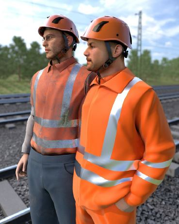

Die Beschaffung und Pflege der erforderlichen Warnkleidung zählt zu den Aufgaben des Unternehmers bzw. der Unternehmerin. Durch regelmäßige Kontrolle und Pflege der Warnkleidung ist deren Funktionsfähigkeit und Wirkung sicherzustellen.
Jede Warnkleidung muss mit einem Piktogramm sowie einer beigelegten Herstellerinformation ausgestattet sein. Auf die Informationsbroschüre wird zusätzlich durch das Piktogramm "Aufgeschlagenes Buch" hingewiesen (siehe Abbildung 2).
Das CE-Zeichen und die spezielle Kennzeichnung sind vom Hersteller auf der Warnkleidung entsprechend der absehbaren Lebensdauer gut sichtbar und lesbar sowie unauslöschbar anzubringen. Sie sind auf jedem Teil der Warnkleidung selbst bzw. auf einem Etikett, das im Kleidungsstück befestigt ist, aufgedruckt.
Der Hersteller ist verpflichtet, der Warnkleidung eine Herstellerinformation in deutscher Sprache beizufügen. Sie enthält alle für den Anwender und die Anwenderin wichtigen Informationen, wie z. B.:
|
Abb. 30 Piktogramm, Herstellerkennzeichnung
Warnkleidung sollte immer in einem trockenen und gut belüfteten Raum gelagert werden.
Da die fluoreszierenden Farben unter UV-Strahlung erheblich ausbleichen, sollte die Warnkleidung vor direktem Sonnenlicht geschützt aufbewahrt werden. Ebenso ist darauf zu achten, dass die Warnkleidung auch in Fahrzeugen nicht unmittelbar am Fenster oder auf den Fahrzeugsitzen aufgehängt oder abgelegt wird.
Bei normalem Gebrauch und vorschriftsmäßiger Pflege kann die Warnkleidung im Rahmen der angegebenen maximalen Pflegezyklen des Herstellers getragen werden. Auf eine regelmäßige optische Sichtprüfung kann nicht verzichtet werden, denn ausgeblichene Hintergrundgewebe oder starke Verschmutzungen verhindern die Erkennbarkeit. Eine Messung der Fluoreszenz des Hintergrundgewebes ist nur durch speziell ausgerüstete Labore möglich.
Durch mechanische Beanspruchung, falsche Pflege oder Kontamination können die retroreflektierenden Streifen beschädigt oder verschmutzt werden. Bei Betrachtung unter Tageslicht ist die Abnutzung zu erkennen, die jedoch keine valide Aussage über die Reflexion zulässt.
Abb. 31 Visueller Abgleich 3M Light Vision LED Schutzbrille
Eine Hilfe für die Entscheidung, ob ein Warnkleidungsstück auszumustern ist, kann durch einen visuellen Abgleich an den Reflexstreifen unter zu Hilfenahme einer Prüflampe und eines Referenzmusters erfolgen (Prüfmethode: Visueller Abgleich, 3MTM Light VisionTM LED Schutzbrille; vgl. Abbildung 17).
Warnkleidung, deren Warnwirkung durch Verschmutzung, Alterung oder Abnahme der Leuchtkraft der verwendeten Materialien nicht mehr ausreicht, muss ausgetauscht werden.
Bei Kontamination durch biologische Arbeitsstoffe darf die Warnkleidung nicht privat gewaschen werden, um unbeteiligte Personen nicht durch solche Stoffe zu gefährden. Die Verschleppung von Viren, Bakterien und Pilzsporen aus den verschiedenen Arbeitsbereichen in den Privatbereich muss ausgeschlossen werden.
Flammhemmend ausgerüstete Warnkleidung muss ebenfalls professionell gereinigt werden, damit die Materialeigenschaften erhalten bleiben.
Eine ordnungsgemäße Reinigung der Warnkleidung sollte entsprechend der Pflegehinweise auf dem Etikett erfolgen. Geeignet dafür ist insbesondere eine nach dem Gütezeichen RAL 992-2 (Deutsches Institut für Gütesicherung und Kennzeichnung e.V.) zertifizierte Wäscherei und ein anerkanntes Waschverfahren. So ist sichergestellt, dass die Kleidung fachgerecht und qualifiziert gewaschen bzw. gereinigt, getrocknet und imprägniert wird.

Abb. 32 Verschmutzte Kleidung